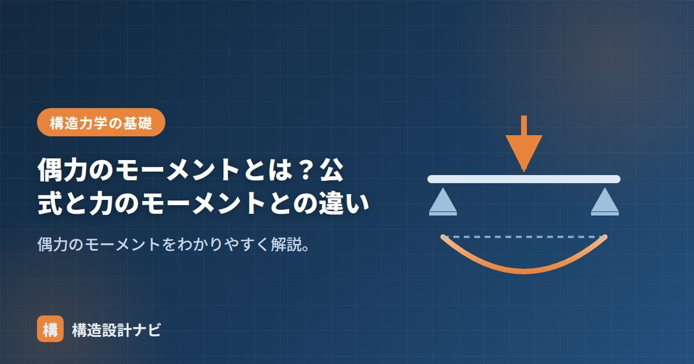

偶力のモーメントとは？公式と力のモーメントとの違い

偶力のモーメントとは、偶力（大きさが等しく向きが逆で、作用線が異なる2つの力の組）が生み出す回転の大きさのことです。1つの力が生む「力のモーメント」とは異なり、偶力は合力がゼロになる特殊な力の組み合わせでありながら、確かに物体を回転させる働きを持つ点が特徴です。ドライバーでねじを回すときの両手の動きや、ハンドルを両手で回す動作は、偶力のモーメントがはたらく身近な例です。
- 偶力のモーメントは M＝F×d（dは2力の作用線間の距離）
- 回転中心をどこに取っても値は一定という特殊な性質を持つ
- 1つの力による「力のモーメント」とは仕組みが異なる
公式
力のモーメントの公式（力×腕の長さ）と形は同じですが、腕の長さdの意味が異なります。偶力の場合は「回転中心から作用線までの距離」ではなく、2つの作用線どうしの距離を使う点に注意が必要です。
計算例
大きさ100Nの2力が、作用線間の距離0.3mで逆向きに作用する場合を考えます。
この偶力による回転の大きさは、どの点を回転中心として計算しても常に30N・mになります。
中心によらず一定
偶力のモーメントは、回転中心をどこに取っても同じ値（F×d）になります。これは、2力それぞれのモーメントを任意の点まわりで計算して足し合わせると、中心の位置が打ち消し合うためです。この性質があるため、偶力は「大きさと向き（回転の方向）だけを持ち、作用点を特定しない」ベクトルのように扱えます。
正負
正負の符号は回転の向きで決めます（本サイトでは時計回りを正とします。流派により逆もあります）。偶力が時計回りなら正、反時計回りなら負、と一貫させます。複数の偶力・モーメントが同時に働く場合は、この符号のルールに従って単純に足し算・引き算ができます。
力のモーメントとの違い
| 力のモーメント | 偶力のモーメント | |
|---|---|---|
| 対象 | 1つの力 | 等大逆向きの2力 |
| 腕の長さ | 回転中心から作用線までの距離 | 2力の作用線間の距離 |
| 中心の取り方 | 中心により値が変わる | 中心によらず一定 |
| 合力 | 力そのものが残る | 合力はゼロ（回転のみ生じる） |
偶力は「合力がゼロだから何も起きない」わけではありません。並進運動には影響しないが、回転運動には影響するという点を混同しないよう注意しましょう。構造物にねじれ（ねじりモーメント）が生じる仕組みを理解するうえでも重要な考え方です。
よくある質問
Q1. 偶力のモーメントはなぜ構造設計で重要なのですか？
柱・梁の接合部や剛接合のフレームでは、荷重によって部材内部にねじれや回転の効果が生じます。これを偶力のモーメントとして捉えることで、回転中心の取り方に関わらず一貫した値で評価でき、モーメントのつり合いの計算をシンプルにできます。
Q2. 偶力の2力の大きさが異なる場合はどうなりますか？
定義上、偶力は「大きさが等しく向きが逆」の2力の組です。大きさが異なる場合は偶力とは呼ばず、まず力の分解や合力の考え方で、通常の力のモーメントとして個別に計算する必要があります。
若手に教えるとき、いちばん誤解されやすいのが「回転中心をどこに取っても同じ」という性質です。単なる便利な近道ではなく、ボルト群にモーメントが作用する際の力の分布を偶力に置き換えて考える場面で実際に効いてくる考え方だと伝えています。
偶力とは何か（図解）
「どこで計算しても同じ」というのが偶力の最大の特徴です。普通の力のモーメントは、回転中心を変えると値が変わります。しかし偶力は2力の間隔Lだけで決まるため、中心をどこに置いても P×L のまま変わりません。この性質があるので、偶力は「大きさ M の純粋な回転作用」として扱えます。
建築のどこに偶力が出てくるか
| 場面 | 偶力になっている2力 | 間隔L |
|---|---|---|
| 梁の曲げ抵抗 | 圧縮縁の圧縮力C と 引張鉄筋の引張力T | 応力中心間距離 j（≒0.875d） |
| 柱脚のアンカーボルト | 引き抜き力T と ベースプレート下の支圧力C | ボルト位置〜支圧中心の距離 |
| 基礎の転倒抵抗 | 建物の自重W と 地反力の偏り | 偏心距離 |
| 耐力壁の押さえ | ホールダウン金物の引張 と 柱脚の圧縮 | 壁の長さ |
| 柱梁接合部のパネルゾーン | 上下フランジに生じる逆向きの力 | 梁せい |
RC梁が曲げモーメントに抵抗するしくみは、まさに偶力です。上端が圧縮されて圧縮力Cが、下端の鉄筋が引っ張られて引張力Tが生じます。CとTは大きさが等しく向きが逆——つまり偶力です。この偶力のモーメント M ＝ T × j が、外力の曲げモーメントとつり合っています。
ここから重要な設計上の帰結が出ます。「梁せいを大きくすればjが大きくなり、同じ鉄筋量でも耐えられるモーメントが増える」。鉄筋を増やすよりも梁せいを増やすほうが効率が良い、という実務の感覚は、この偶力の式から来ています。
まとめ
- 偶力のモーメント M＝F×d（dは2力の作用線間の距離）。
- 計算例：100N×0.3m＝30N・m。回転中心をどこに取っても値は一定。
- 合力はゼロでも回転運動には影響するという特殊な性質を持つ。
- 1力の力のモーメント（中心により変わる）とは異なる。